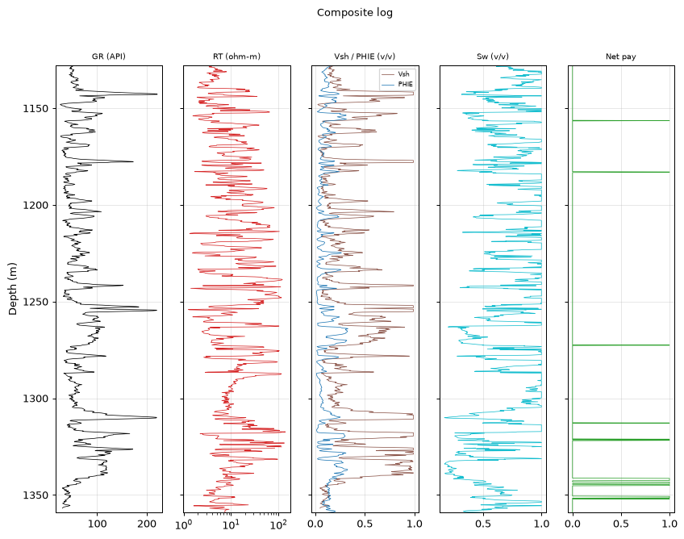
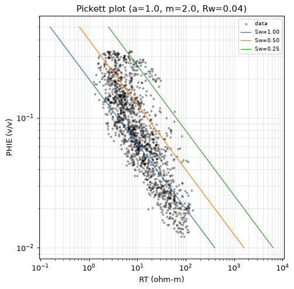
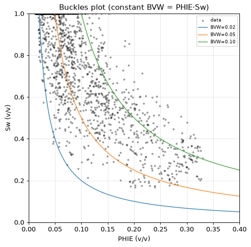
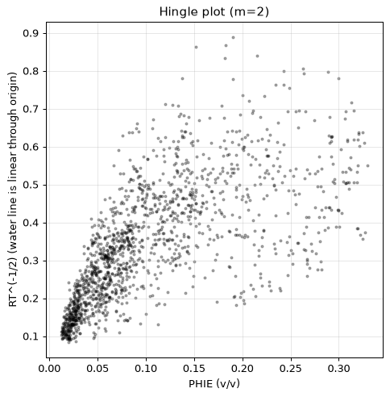
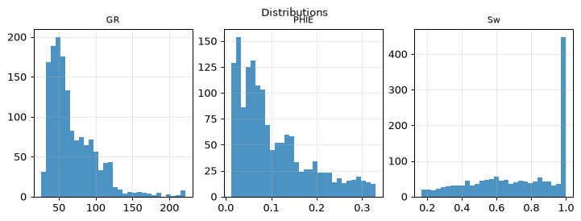
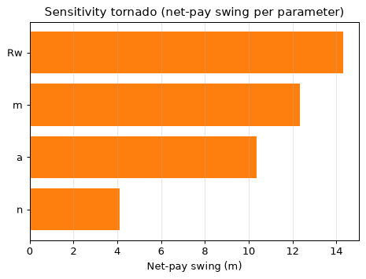
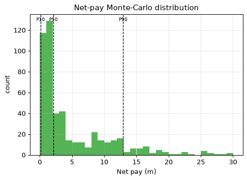

| Well (UWI) | 15-135-00358 |
| Log date | 03/25/66 |
| Acquisition date (header) | 3/25/66 |
| BHT (measured) | 115 DEGF |
| Mud resistivity (RM) | 0.14 OHMM |
| Mud filtrate (RMF) | 0.08 OHMM |
| PLSS location | Sec 35 T19S R22W (map precision ±1.6 km) |
| Larionov variant | old_rocks (degraded) |
| Convergence status | DID_NOT_CONVERGE |
| Confidence tier | ○ BRACKETED |
| Engine versions | calc_vsh 0.1.0 · calc_phie 0.1.0 · calc_sw 0.1.0 · formula_registry 0.1.0 |
| Config hash (SHA-256) | 2a9cb78728e386ab… |
| Git SHA | bd23bea18153 |
| Generated | autonomously, no human in the per-report loop |
Confidence legend. Each result is tagged by parameter provenance: ● FIRM (core-calibrated) · ◐ QUALIFIED (offset-derived) · ○ BRACKETED (regional/global default — read as a range, dominant uncertainty stated). The system does not claim *always correct*; it states how well-supported each number is.
⚠️ ABSTENTION — this is NOT a confident estimate. The run did not converge to a defensible result; the numbers below are an uncalibrated engineering estimate, reported for transparency only:
- 1 unresolved MECHANICAL objection(s)
The vintage log covers only the deep consolidated section, so the full logged interval is evaluated — there is no overburden on record to exclude. Within that interval the net pay is 4.9 m with average effective porosity 0.146 and average water saturation 0.418. Monte-Carlo places the P50 net pay at 2.1 m within a P10-P90 range of 0.1 to 13.0 m. CLASS-B VINTAGE WELL: porosity comes from a count-rate neutron transform (engine-anchored, validated against sonic on offset wells; structural approximation) — every number is bracketed and must be read as a range. The run ABSTAINS from a confident estimate: the validators keep an unresolved objection, so the result must be read as a bracketed range, not a point value.
Net pay P10 / P50 / P90 = 0.1 / 2.1 / 13.0 m.
Net pay is dominated by 'Rw', which is a regional DEFAULT (uncalibrated). This is the single largest uncertainty — the result is bracketed, not a confident point estimate.
| Edit type | Curve | Detail |
|---|---|---|
| spike_removal | — | 3 edits |
| degradation | — | — |
Raw mnemonics mapped to canonical curve names:
| Canonical | Raw mnemonic |
|---|---|
| DT | DT |
| GR | GR |
| NEUT | NEUT |
| RT | GRD |
Edits applied before compute (by type): degradation: 1, spike_removal: 3.
All numbers are produced by the deterministic, golden-tested engine. The LLM only selects methods/parameters and writes prose — it never computes a number. Figures are deterministic renderings of these computed numbers for the human reader; the agent reasons over the numeric EDA digest, not images (the models have no vision).
| Step | Method (frozen) | Version |
|---|---|---|
| Vsh | Larionov 1969 (old rocks) | vsh_larionov_old 0.1.0 |
| PHIE | Vintage count-rate neutron, two-point semilog (class-B, engine-anchored) | phi_neutron_countrate 0.1.0 |
| Sw | Archie 1942 | sw_archie 0.1.0 |
| Net pay | Vsh/PHIE/Sw cutoffs → net sand → net reservoir → net pay | netpay 0.1.0 |
| Uncertainty | Monte Carlo P10/P50/P90 + parameter sensitivity | mc 0.1.0 |
Low-resistivity scan: rt_threshold=3.25, n_flagged=152, intervals=[[1131.7, 1131.7], [1136.6, 1137.8], [1138.1, 1138.3], [1138.6, 1139.5], [1144.2, 1145.0], [1146.0, 1147.4], [1148.6, 1148.9], [1153.4, 1154.3], [1155.2, 1156.3], [1160.5, 1160.5]].
Composite log

Pickett plot

Buckles plot

Hingle plot

Distributions

Sensitivity tornado

Net-pay Monte-Carlo distribution

Mean Vsh by method (selection is the agent's; the LLM authors no number):
| Method | Mean Vsh | Selected |
|---|---|---|
| vsh_larionov_old | 0.340 | ✓ |
| vsh_larionov_tertiary | 0.264 | |
| vsh_linear | 0.458 | |
| vsh_clavier | 0.324 | |
| vsh_steiber | 0.287 |
_Not computed — no RHOB/NPHI curve for the comparison._
Mean Sw (Archie 1942) = 0.726 (a=1.00, m=2.00, n=2.00, Rw=0.0336 ohm-m). Electrical parameters are engine-sourced; alternative Sw models are optional sections.
Mean Sw by method (engine-computed comparison; the LLM authors no number):
| Method | Mean Sw | Selected |
|---|---|---|
| sw_archie | 0.726 | ✓ |
| sw_simandoux | 0.441 | |
| sw_indonesia | 0.509 |
Raw net-pay runs merged into 7 geological intervals (gap tolerance 1.5 m).
| Interval | Top (m) | Base (m) | Net pay (m) | Avg PHIE | Avg Sw | Avg Vsh |
|---|---|---|---|---|---|---|
| Z1 | 1156.4 | 1156.4 | 0.2 | 0.179 | 0.493 | 0.128 |
| Z2 | 1182.9 | 1183.1 | 0.3 | 0.197 | 0.479 | 0.224 |
| Z3 | 1272.5 | 1272.5 | 0.2 | 0.162 | 0.494 | 0.322 |
| Z4 | 1312.8 | 1312.8 | 0.2 | 0.101 | 0.495 | 0.312 |
| Z5 | 1321.2 | 1321.8 | 0.5 | 0.127 | 0.346 | 0.325 |
| Z6 | 1341.4 | 1345.1 | 2.6 | 0.146 | 0.401 | 0.228 |
| Z7 | 1350.7 | 1351.9 | 1.1 | 0.136 | 0.441 | 0.125 |
| Quantity | Value |
|---|---|
| Gross interval | 231.3 m |
| Net pay (P10/P50/P90) | 0.1 / 2.1 / 13.0 m |
| Net-to-gross | 0.021 |
| Avg PHIE (net pay) | 0.146 |
| Avg Sw (net pay) | 0.418 |
| Avg Vsh (net pay) | 0.217 |
Monte Carlo, 500 realizations (seed 42). Net pay swing per parameter (one-at-a-time):
| Parameter | Net-pay swing (m) |
|---|---|
| Rw | 14.3 |
| m | 12.3 |
| a | 10.4 |
| n | 4.1 |
Dominant uncertainty: Rw (swing 14.3 m).
Multi-seed robustness: P50 UNSTABLE across seeds (spread 0.8 m across 4 seeds).
Net pay is dominated by 'Rw', which is a regional DEFAULT (uncalibrated). This is the single largest uncertainty — the result is bracketed, not a confident point estimate.
| Parameter | Value | Unit | Provenance | Source |
|---|---|---|---|---|
| gr_min | 20.000 | API | default | — |
| gr_max | 120.000 | API | default | — |
| rho_ma | 2.710 | g/cc | default | Schlumberger 1989 |
| rho_fl | 1.000 | g/cc | default | — |
| phie_max | 0.450 | v/v | default | — |
| phi_sh_d | 0.100 | v/v | default | — |
| phi_sh_n | 0.350 | v/v | default | — |
| a | 1.000 | - | default | Winsauer et al. 1952 |
| m | 2.000 | - | default | Archie, G.E. 1942 |
| n | 2.000 | - | default | Archie, G.E. 1942 |
| Rw | 0.040 | ohm-m | default | Kansas Geological Survey 2000 |
| rt_hydrocarbon_floor | 5.000 | ohm-m | default | — |
| vsh_cutoff | 0.350 | v/v | default | — |
| phie_cutoff | 0.100 | v/v | default | — |
| sw_cutoff | 0.500 | v/v | default | — |
| bit_size_config | 7.875 | in | default | — |
| qc_abort_threshold | 0.800 | - | default | — |
| circuit_breaker_n | 3.000 | - | default | — |
The citations table (not RAG) gives each cited parameter exactly one frozen source. Parameters tagged
defaultare regional/global — they drive the bracketed tier.
Boundary-inclusive criteria applied by the engine (netpay) to flag reservoir:
| Stage | Criterion | Cutoff | Provenance |
|---|---|---|---|
| Net sand | Vsh ≤ cutoff | 0.350 | default |
| Net reservoir | + PHIE ≥ cutoff | 0.100 | default |
| Net pay | + Sw ≤ cutoff | 0.500 | default |
Cutoff values are engine parameters (never LLM-authored); the dominant net-pay uncertainty is Rw — see Uncertainty for the swing.
Curve provenance (canonical ← raw mnemonic): DT←DT, GR←GR, NEUT←NEUT, RT←GRD.
QC edits applied before compute — degradation: 1, spike_removal: 3.
| Validator | Type | Detail |
|---|---|---|
| vsh_phie_anticorrelation | support | Vsh-PHIE Pearson 0.98 > 0.3 (dirty rock + high porosity) |
| rt_sw_consistency | mechanical | 63 depths with Sw<0.4 but RT<5.0 ohm-m |
flowchart TD
dec_1["decision: step: compare_methods"]
act_1["tool_call: compare_methods"]
dec_2["decision: step: compute_vsh"]
act_2["tool_call: compute_vsh"]
dec_3["decision: step: compute_phie"]
act_3["tool_call: compute_phie"]
dec_4["decision: step: compare_methods"]
act_4["tool_call: compare_methods"]
dec_5["decision: step: compute_sw"]
act_5["tool_call: compute_sw"]
dec_6["decision: step: apply_cutoffs"]
act_6["tool_call: apply_cutoffs"]
dec_7["decision: step: run_uncertainty"]
act_7["tool_call: run_uncertainty"]
dec_8["decision: step: derived_parameters"]
act_8["tool_call: derived_parameters"]This is a LAS-only study. Data that would calibrate the interpretation is absent:
Vintage class-B well: logged interval covers only the deep consolidated section (no overburden recorded), GR-only clay indicator, count-rate porosity with engine anchors, Archie saturation. Structural-uncertainty caveat applies to every number. Method choices were made against the engine's numeric comparisons, not by preference; the comparison tables show the rejected alternatives beside the selected method. All numbers in this report come from the deterministic engine; the analyst chose the interval, the methods and the analyses, and wrote this prose — nothing more. Remaining uncertainty is dominated by the uncalibrated regional parameters.
{
"net_pay_total_m": 4.876799999998184,
"net_pay_p10_p50_p90": [
0.1371599999999498,
2.1335999999992055,
12.953999999995176
],
"driving_params": {
"a": 1.0,
"m": 2.0,
"n": 2.0,
"Rw": 0.04
},
"claim_verifier": {
"result": "PASS",
"flags": [],
"tone_flags": []
}
}| Item | Present |
|---|---|
| QC edits recorded before compute | ✓ |
| Every number ledger-traced | ✓ |
| Confidence tier on the run | ✓ |
| Parameter citations frozen | ✓ |
| Validator objections listed, not hidden | ✓ |
| Uncertainty propagated (Monte Carlo) | ✓ |
| Claim verifier run on prose | ✓ |